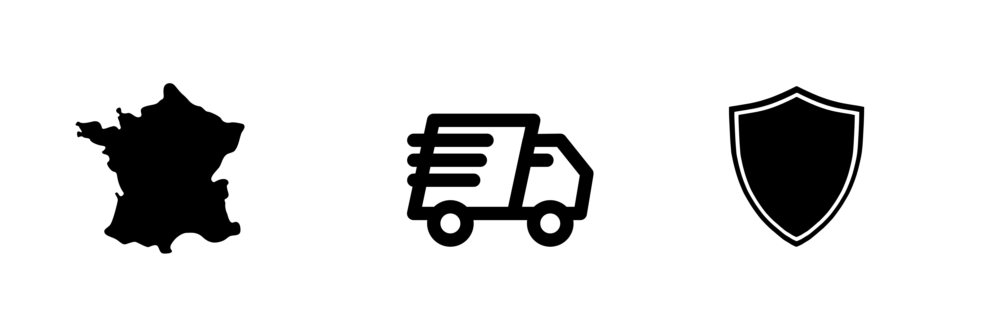

Vous reconnecter avec le Végétal, même sans avoir la main verte, tout au long de l’année ! Profitez de nos potagers design et connectés, pour jardiner avec style sans sortir de chez-soi.
Coloris 199,99€
Les herbes aromatiques sont indispensables en cuisine : elles ré-haussent un plat et évitent de trop saler. Acheter des herbes fraîches alors qu’on n’a seulement besoin de quelques feuilles, pas tellement envie. Alors pourquoi ne pas cultiver son propre petit jardin de fines herbes à l’intérieur? Cela vous permet d’avoir des herbes à portée de main, et ce, toute l’année. Si vous avez une terrasse ou un balcon pour planter vos herbes, lisez cet article sur les mini potagers . Sinon, vous avez l’option du jardin connecté ou mini serre connectée qui a le vent en poupe ces derniers temps. Idéal pour un cadeau de jardinage, le jardin connecté permet aux professionnels comme aux personnes qui n’ont pas la main verte de faire pousser des herbes mais également d’autres petits légumes.
